Nucleus lies near midline in caudal midbrain, ventral to inferior colliculus
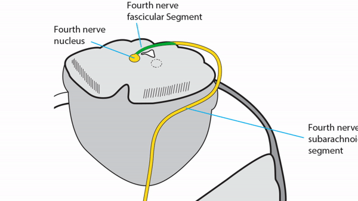
Fascicular segment travels dorsally around Sylvian aqueduct, crossing to opposite side in anterior medullary velum caudal to inferior colliculus
Tip:
the fourth nerve is unique among cranial nerves in having its fascicles exit dorsally and crossing to innervate a structure on opposite side of body
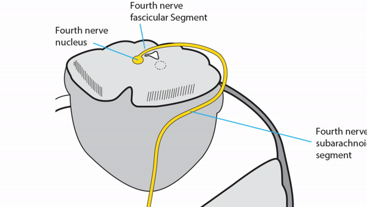
Subarachnoid segment travels medial to tentorium cerebelli and pierces it to enter cavernous sinus
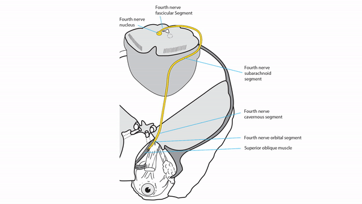
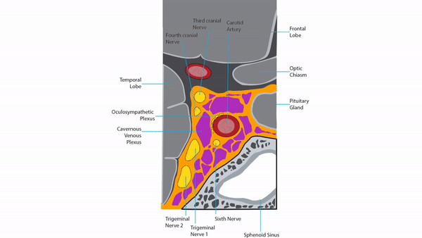
Cavernous segment
lies in lateral cavernous sinus wall inferior to third nerve,
exiting in superior orbital fissure
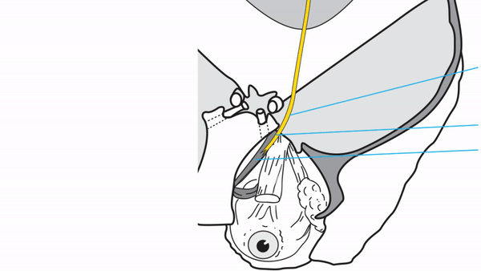
Orbital segment
enters orbit outside muscle cone and supplies superior oblique muscle
Tip:
intraconal anesthetic injections for ocular surgery often spare intorsion because fourth nerve lies outside muscle cone
Superior oblique muscle passes through a sleeve of dura on the anterior medial orbital wall called the trochlea, where its tendon bends more than 90 degrees to insert on the top of the globe
Superior oblique muscle from above
Produces fourth nerve palsy in eye opposite to side of damaged fasciculus that follows characteristic misalignment pattern on the 3-step test and displays excyclodeviation on the Double Maddox Rod
4th Nerve Palsy Blue EyesDouble Maddox Rod
Tip:
in all forms of acquired fourth nerve palsy, the hypertropia is always greatest in downgaze
May be accompanied by other clinical manifestations of dorsal midbrain dysfunction
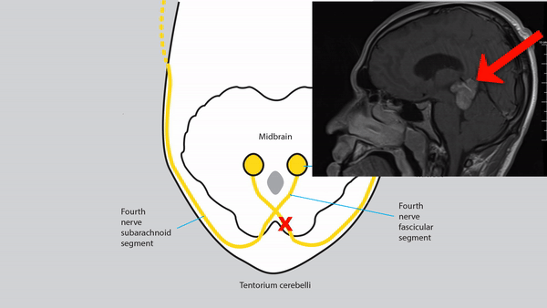
Common causes: head trauma, thalamic and dorsal midbrain lesions (demyelination, stroke, tumor,
aqueductal stenosis, ventricular shunt failure)
Head trauma often causes bilateral fourth nerve palsies because both nerves are damaged when dorsal midbrain is battered by rigid tentorium cerebelli; Double Maddox Rod testing reveals more than 10 degrees of excyclodeviation
Bilateral 4th Nerve Trauma
Bilateral fourth nerve palsy, usually caused by head trauma, but also by other lesions affecting the dorsal midbrain, can be distinguished from unilateral fourth nerve palsy by these features
Right hypertropia in left gaze, left hypertropia in right gaze
Double Maddox Rod testing usually reveals more than 10 degrees of excyclodeviation
Double Maddox Rod Test
V-pattern esotropia
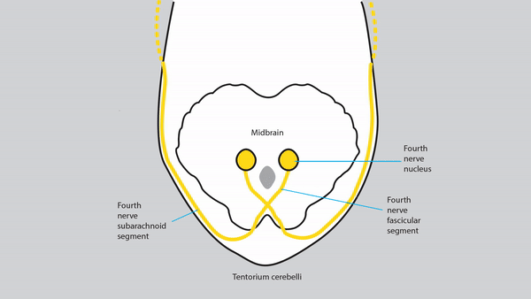
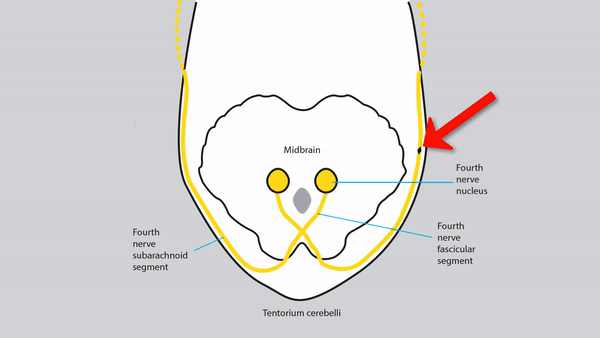
Subarachnoid lesion
Produces ipsilateral fourth nerve palsy with misalignment pattern similar to that of fascicular lesion, but often in isolation
Common causes: head trauma, neurosurgery, ischemia
Uncommon causes: tentorium cerebelli region masses
Tentorial Meningioma
and hemorrhage, meningitis, neuritis, schwannoma
Produces ipsilateral fourth nerve palsy with misalignment pattern similar to that of fascicular lesion, but always in combination with dysfunction of other nerves in cavernous sinus
Tip:
fourth nerve is most resistant of ocular motor cranial nerves to cavernous sinus lesions, so do not expect fourth nerve palsy in isolation
Common causes: tumors, aneurysms, inflammations
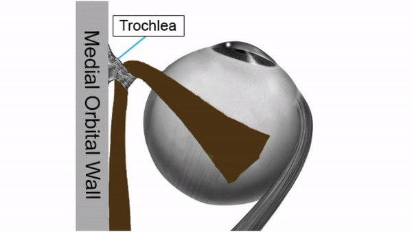
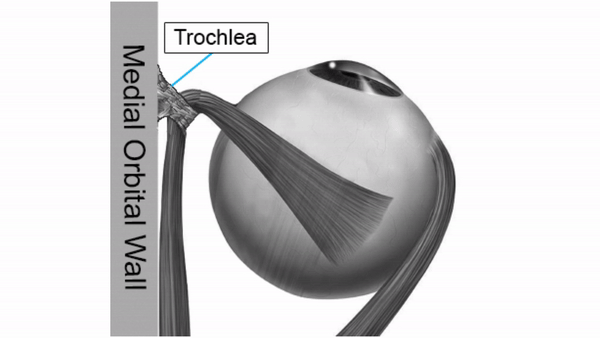
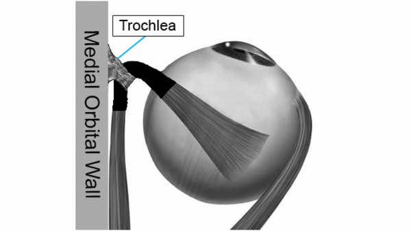
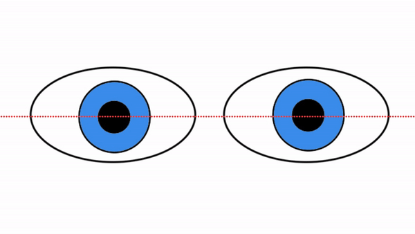
Orbital lesion
Tip:
orbital lesions do not produce typical fourth nerve palsies!